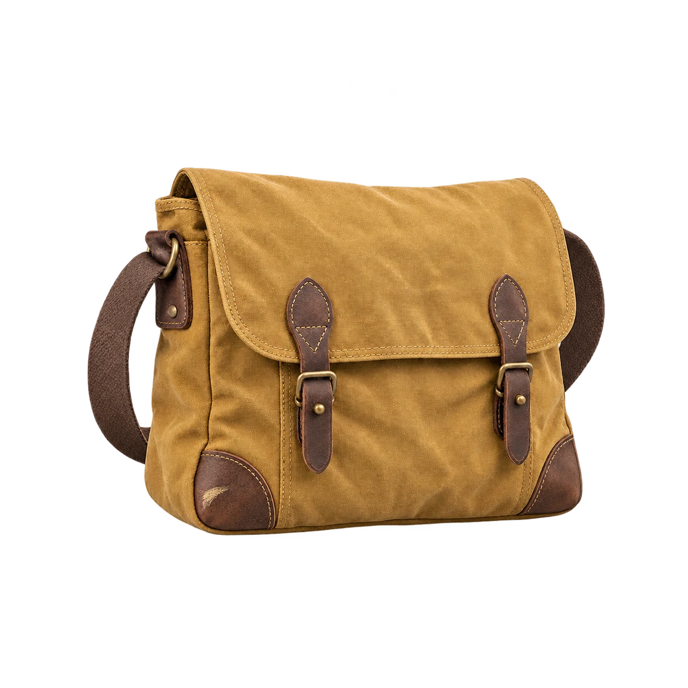

recast.
One more
good chapter.
One invented canvas satchel.
A considered sample listing.

A NOTE TO RECAST
A supplied image, carefully described.
Nothing published or offered for sale.
6listing fields
prepared.
prepared.
A thoughtful draft, ready to read.
02 / LOOK A LITTLE CLOSER
The details
carry the story.
Condition notes describe the supplied image only.
A true crop of the same image. It is not a separate inspection or proof of condition beyond what is visible.
03 / THE COMPLETE DRAFT
For another everyday.
One invented object. Supplied sample copy.
No listing is published.